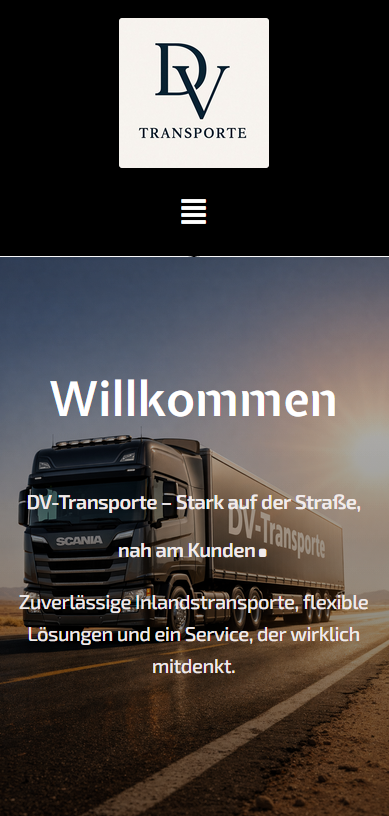

01
Struktur & Inhalte
Die Seite wird so aufgebaut, dass Besucher dein Angebot schnell verstehen und sich sicher orientieren können.
Für Dienstleister, lokale Unternehmen und Marken, die online hochwertig auftreten möchten. Ziel ist ein Auftritt, der Vertrauen aufbaut, leicht zu bedienen ist und aus Besuchern echte Anfragen macht.
Eine gute Website zeigt dein Angebot verständlich, vermittelt Qualität und macht die Kontaktaufnahme leicht. So arbeitet dein Auftritt nicht nur schön, sondern wirklich für dein Unternehmen.
Die Seite wird so aufgebaut, dass Besucher dein Angebot schnell verstehen und sich sicher orientieren können.
Farben, Schriften, Bilder und Abstände greifen sauber ineinander und sorgen für einen modernen, hochwertigen Auftritt.
Die Website wird sauber umgesetzt, auf allen Geräten stimmig aufgebaut und mit Details veredelt, die professionell wirken.

Eine starke Website braucht nicht mehr Elemente, sondern die richtigen an den richtigen Stellen. So wirkt der Auftritt hochwertig, bleibt übersichtlich und führt Besucher ohne Umwege zum nächsten Schritt.
Gute Websites wirken nicht zufällig überzeugend. Sie sind klar aufgebaut, angenehm zu lesen und in jeder Sektion stimmig. Genau dort trennt sich ein Standard-Auftritt von einer professionellen Website.
Der Einstieg vermittelt sofort Klarheit, Qualität und Professionalität.
Gut lesbare Inhalte, klare Abstände und ein ruhiger Aufbau sorgen sofort für mehr Vertrauen.
Weil der Besucher schneller versteht, was du machst, wie du arbeitest und was der nächste Schritt ist.
Jedes Projekt folgt einem einfachen, nachvollziehbaren Ablauf. So bleibt die Zusammenarbeit entspannt und das Ergebnis passt wirklich zu deinem Unternehmen.
Was soll die Seite leisten, wen soll sie anziehen und wie soll sie sich anfühlen?
Die Phase, in der aus einer Idee ein hochwertiger, visueller Auftritt wird.
Die Website wird für Desktop und Smartphone sauber abgestimmt, bis alles rund wirkt.
Eine gute Website soll nicht nur gefallen, sondern Vertrauen schaffen und den nächsten Schritt leicht machen.
Mit starken Bildern, einer klaren Struktur und einer verständlichen Botschaft entsteht daraus ein Auftritt, der vom ersten Eindruck an Vertrauen schafft.